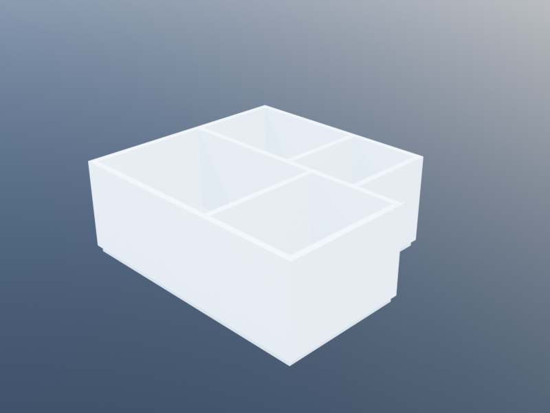

Layout Engine
layout walks a SpaceDesc tree and assigns world coordinates to every leaf, grouping placed spaces by z into one Storey per level. Its output is a Layout — the same type the imperative floor_plan returns — which every downstream stage (build, validate, or front-end packages like AlgorithmicArchitecture.generate_elements) consumes.
using KhepriBase
desc = room(:bed, :bedroom, 4.0, 3.0) | room(:bath, :bathroom, 2.5, 3.0)
l = layout(desc) # origin defaults to (0, 0, 0)
sp_bed = find_space(l, :bed)
sp_bath = find_space(l, :bath)
space_origin(sp_bed)[1] # 0.0
space_origin(sp_bath)[1] # 4.0
adjacencies(l) # shared walls + exterior edges
l.storeys # one Storey per distinct zPass origin_x, origin_y, origin_z keywords to place the whole composition at a non-origin anchor.
layout(desc) fed into build(...) on a 4-room tree produces the built geometry below:

Where the types and accessors live
The unified Level-1 types and their accessors — Space, Storey, Layout, spaces, find_space, space_origin, space_width, space_depth, space_area, space_perimeter, boundary_xy, storey_z, adjacent_spaces, space_boundaries, space_walls, space_doors, space_windows — are auto-documented under the Space Layout section of API – Infrastructure.
The adjacency data type (AdjacencyRelation) and its constructors (adjacencies, detect_adjacencies) live on the Adjacencies page.
Compiling a design
KhepriBase.layout — Method
layout(desc::SpaceDesc; origin_x=0.0, origin_y=0.0, origin_z=0.0)Walk the SpaceDesc tree and assign concrete world coordinates to every space. Returns a Layout whose storeys group placed spaces by z-elevation. Adjacencies are computed on demand via adjacencies.
KhepriBase.rectangular_boundary — Function
Axis-aligned rectangle as Vector{NTuple{2, Float64}} counterclockwise from (x, y).
See also
- Designs (Level 2) — the declarative tree that
layout(desc)consumes. - Space Descriptions — how the tree leaves map to placed spaces.
- Adjacencies — what
adjacencies(l)returns and how the shared-edge detection works. - Constraints (reference) — validators that operate on a
Layoutor aBuildResult.